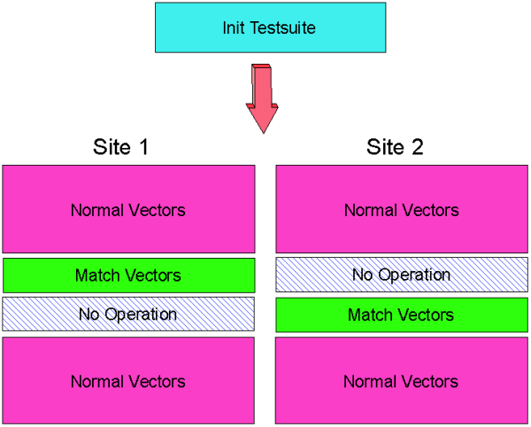

Parallel Execution - Not Self-Contained
The figure below shows schematically a workaround that lets you perform match loops - in parallel in non-self-contained test suites and maintain the state of each of the sites.
Here, you need to set the Site Match flag to OFF.

In the vector setup, two identical match loops are inserted in the flow of vectors. When this is downloaded, it is automatically copied for all sites.
You can use a test method for the Init Test suite which disables all receivers of site 2 and makes its drive vectors "harmless" (that is, they do not put the device into a state which is not matchable, or kick a matched device out of its matched state), while a match loop is being performed on site 1.
Then site 1 undergoes a "no operation (NOP)" state while the match loop is performed on site 2.
Once the match loops have been performed, the normal vector sequence is resumed.
For this test you need to perform a "Label per site" (see How to execute separate patterns per site (Label per site) and SQSL, SQSL? - (SeQuencer Start Label)).
Functional changes
- Introduced before SmarTest 6.3.2